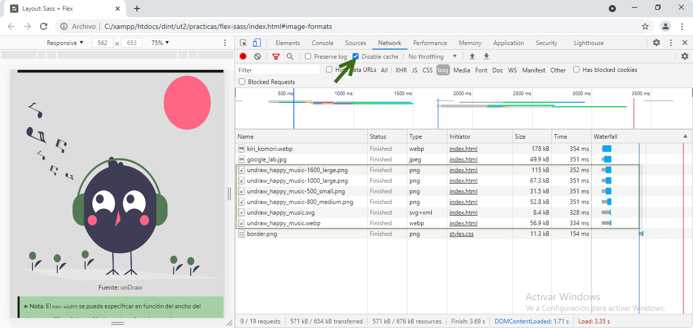
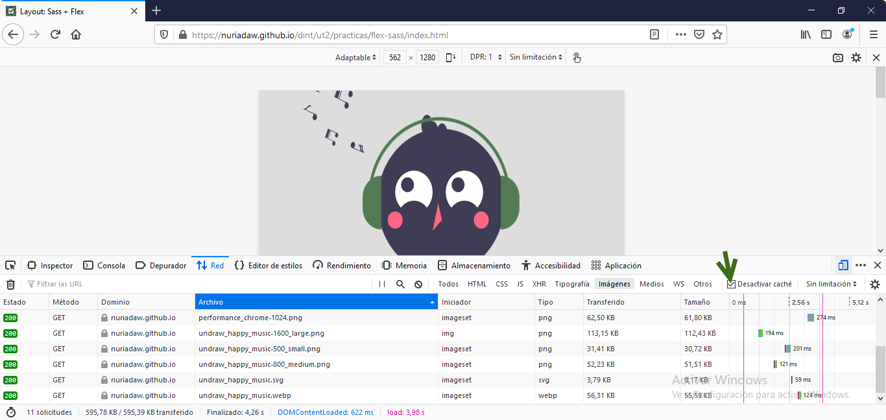

Antes de hacer las imágenes adaptativas hay que asegurar que no desborden la pantalla.
img {
max-width: 100%;
} /* El valor de max-width representa un porcentaje del elemento contenedor.*/
Fuente: unDraw
★ Nota: El max-width se puede especificar en función
del ancho del viewport utilizando las unidades vw (por ejemplo,
100vw).
Propiedad/valor
max-width
4.0
12.0
2.0
10.0
3.1
%
1.0
3.0
1.0
3.5
1.0
vw
26.0
16.0
19.0
20.0
6.1
Primera versión del navegador que soporta totalmente la propiedad o el valor.
Fuente: Can I Use
2. Usando el atributo srcset
El objetivo es conseguir que el navegador obtenga la versión de la imagen con las dimensiones más
pequeñas posibles, pero mayor que el tamaño de visualización final de la imagen. srcset
permite listar un conjunto de imágenes con diferentes resoluciones para que el navegador elija al
obtener
la imagen. La elección del navegador depende de las dimensiones del viewport, el tamaño
de la imagen en relación con el viewport, la densidad de píxeles del dispositivo del usuario y
las dimensiones del archivo fuente.
⚠ Importante: para la carga adecuada del tamaño de la imagen en
función de la anchura viewport
hay que indicarle al navegador el tamaño de cada archivo antes de que lo recupere (por ejemplo,
1600w).
Añadir un descriptor de anchura a cada archivo en el srcset, indica al navegador la anchura
de cada imagen en píxeles antes de que la obtenga. El navegador puede entonces utilizar estas anchuras
para decidir qué imagen obtener en función del tamaño de su ventana. Obtiene la imagen con la anchura
más pequeña que aún es mayor que la anchura del viewport. Si srcset no está
soportado
cargará por defecto la imagen de src.
★ Nota: Se puede especificar la densidad de pixels en lugar de la
anchura. (Ver punto 5)
Atributo
srcset
38.0
16.0
38.0
25.0
9.0
Primera versión del navegador que soporta totalmente el atributo. Fuente: Can I Use
El valor del tamaño coincide con el valor del ancho máximo de la imagen en el CSS. Ahora, el navegador
tiene
todo lo que necesita para escoger la versión correcta de la imagen. El navegador conoce tanto el ancho
de su
propio viewport como la densidad de píxels del dispositivo del usuario, y le hemos dado las
dimensiones
de los archivos fuente (mediante el descriptor de anchura) y los tamaños de imagen relativos al
viewport
(mediante el atributo size).
Variable
¿Conocido por el autor cuando está escribiendo el código?
¿Conocido por el navegador cuando está cargando la página?
La media query comprueba la anchura del viewport de la pantalla, y aplica el CSS si el
ancho del viewport es menor de 700px. Se puede informar al navegador sobre la
media query
en el atributo sizes para que obtenga la imagen correcta cuando esta cambie de tamaño.
Regla
@media
4.0
12.0
2.0
10.0
3.1
Primera versión del navegador que soporta totalmente la regla. Fuente: Can I Use
5. Opcional: usando los elementos picture y source
Se puede usar el elemento <picture> y el elemento <source>, en combinación con
media queries, para cambiar la fuente de la imagen a medida que la ventana cambia de tamaño.
El elemento <picture> permite definir varios archivos fuente mediante la etiqueta <source>.
Difiere del uso directo del atributo srcset en la etiqueta <img> en que
<source> permite añadir cosas como media queries a cada conjunto de fuentes. En lugar
de dar al navegador los tamaños de imagen y dejar que decida cuál usar, permite definir qué imagen
usar para cada tamaño de ventana.
En el código anterior, a partir de 750px, el navegador obtiene
undraw_happy_music-1600_large.png
(si el dispositivo tiene una pantalla 2x) o img/undraw_happy_music-1000_large.png. Si la
anchura de
la ventana es inferior a 750px pero superior a 500px, el navegador obtiene
img/undraw_happy_music-800_medium.png. Si el ancho de la ventana es inferior a 500px,
el navegador obtiene la imagen de reserva img/undraw_happy_music-500_small.png.
★ Nota: Si el navegador no soporta el elemento <picture>,
obtiene lo que haya en el elemento <img>. <picture> sirve únicamente para especificar
múltiples
fuentes para el contenido de <img>. Es el elemento <img> el que muestra la imagen.
Elemento/valor
figure
8.0
12.0
4.0
11.5
5.1
picture
38.0
13.0
38.0
25.0
9.1
source
90.0
12.0
3.5
75.0
14.1
profundidad de píxel
4.0
12.0
2.0
12.1
3.1
Primera versión del navegador que soporta totalmente el elemento o el valor.
Fuente: Can I Use
6. Otros formatos de imagen: svg y webp
Uno de los principales beneficios de SVG es que son independientes de la resolución.
Esto significa que, a diferencia de los tipos de archivos como jpg o png, los svg conservan la misma
calidad sin importar en qué resolución de pantalla o tamaño estén.
El uso de svg puede resultar en tamaños de archivo más pequeños que otros tipos de archivos cuando se
optimizan correctamente. Esto es útil cuando se trata de pantallas de mayor resolución, ya que los
svg no necesitan crearse en tamaños más grandes para adaptarse a la diferencia como lo hacen las
imágenes rasterizadas. Al tener un tamaño de archivo más pequeño, y por tanto más ligero, la imagen
se cargará más rápido.
El formato de imagen WebP fue desarrollado por Google. Su principal ventaja: permite
obtener una excelente
definición sin que el archivo sea demasiado pesado. Esto es esencial para la velocidad de carga de las
páginas.
Reduce el tamaño de las imágenes hasta un 35% para JPEG y un 50% para PNG, obteniendo archivos más
ligeros sin perder
su calidad original. Además, admite canal de transparencia.
Otra ventaja es que, al ser un formato de Google mejora el SEO en su buscador.
Primera versión del navegador que soporta totalmente el formato usando <img>.
Fuente: Can I Use
7. Rendimiento (Chrome y Firefox)

Rendimiento de imágenes en local (Chrome)

Rendimiento de imágenes en GitHub (Firefox)
La imagen escogida no es muy pesada, aún así el tiempo de respuesta tiende a reducirse al escoger un tamaño
de imagen más acorde al dispositivo y/o viewport.
El formato más ligero y más rápido en cargar es SVG, seguido de WebP.
★ Nota: Los navegadores pueden tener guardadas las imágenes en caché, conviene limpiarlo
antes de monitorizar el rendimiento y desactivarlo mientras las herramientas de desarrollador estén abiertas.
Bonus: rendimiento CSS comprimido vs CSS sin comprimir